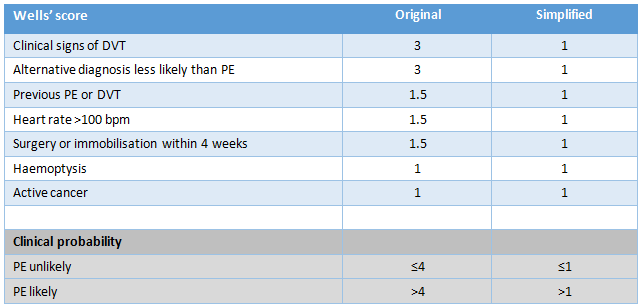
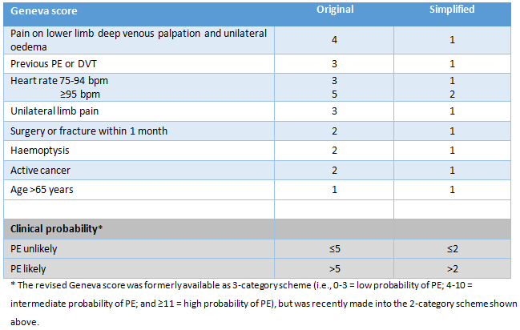
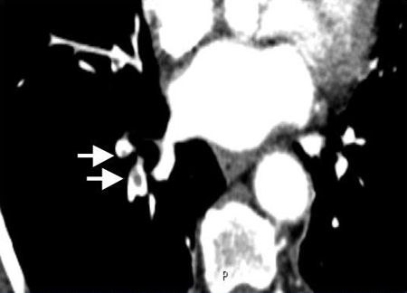
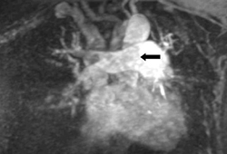

History and physical examination alone are rarely sufficient to confirm or rule out the condition. A high index of suspicion and prompt management are required as the highest risk of dying is within the first 2 hours of presentation.
[74]
Bĕlohlávek J, Dytrych V, Linhart A. Pulmonary embolism, part I: Epidemiology, risk factors and risk stratification, pathophysiology, clinical presentation, diagnosis and nonthrombotic pulmonary embolism. Exp Clin Cardiol. 2013 Spring;18(2):129-38.
https://www.ncbi.nlm.nih.gov/pmc/articles/PMC3718593/
http://www.ncbi.nlm.nih.gov/pubmed/23940438?tool=bestpractice.com
In one study, the diagnosis of PE was unsuspected in 70% of those who ultimately died from the condition.
[6]
Stein PD, Henry JW. Prevalence of acute pulmonary embolism among patients in a general hospital and at autopsy. Chest. 1995 Oct;108(4):978-81.
http://www.ncbi.nlm.nih.gov/pubmed/7555172?tool=bestpractice.com
Among those who died, death occurred within 1 hour in nearly 79% of patients and within 2.5 hours in 93% of patients.
[6]
Stein PD, Henry JW. Prevalence of acute pulmonary embolism among patients in a general hospital and at autopsy. Chest. 1995 Oct;108(4):978-81.
http://www.ncbi.nlm.nih.gov/pubmed/7555172?tool=bestpractice.com
Clinical probability, assessed by a validated prediction rule and/or clinical judgement, is the basis for all diagnostic strategies for PE.
[75]
Raja AS, Greenberg JO, Qaseem A, et al. Evaluation of patients with suspected acute pulmonary embolism: best practice advice from the Clinical Guidelines Committee of the American College of Physicians. Ann Intern Med. 2015 Nov 3;163(9):701-11.
http://annals.org/aim/fullarticle/2443959/evaluation-patients-suspected-acute-pulmonary-embolism-best-practice-advice-from
http://www.ncbi.nlm.nih.gov/pubmed/26414967?tool=bestpractice.com
[76]
Konstantinides SV, Torbicki A, Agnelli G, et al; Task Force for the Diagnosis and Management of Acute Pulmonary Embolism of the European Society of Cardiology (ESC). 2014 ESC guidelines on the diagnosis and management of acute pulmonary embolism. Eur Heart J. 2014 Nov 14;35(43):3033-69.
https://academic.oup.com/eurheartj/article/35/43/3033/503581
http://www.ncbi.nlm.nih.gov/pubmed/25173341?tool=bestpractice.com
In haemodynamically stable patients with intermediate clinical probability of PE, D-dimer measurement is recommended to assess the need for imaging.
[75]
Raja AS, Greenberg JO, Qaseem A, et al. Evaluation of patients with suspected acute pulmonary embolism: best practice advice from the Clinical Guidelines Committee of the American College of Physicians. Ann Intern Med. 2015 Nov 3;163(9):701-11.
http://annals.org/aim/fullarticle/2443959/evaluation-patients-suspected-acute-pulmonary-embolism-best-practice-advice-from
http://www.ncbi.nlm.nih.gov/pubmed/26414967?tool=bestpractice.com
In patients with very low clinical probability of PE, D-dimer testing is reserved for those who do not meet all of the Pulmonary Embolism Rule-Out Criteria (PERC).
[75]
Raja AS, Greenberg JO, Qaseem A, et al. Evaluation of patients with suspected acute pulmonary embolism: best practice advice from the Clinical Guidelines Committee of the American College of Physicians. Ann Intern Med. 2015 Nov 3;163(9):701-11.
http://annals.org/aim/fullarticle/2443959/evaluation-patients-suspected-acute-pulmonary-embolism-best-practice-advice-from
http://www.ncbi.nlm.nih.gov/pubmed/26414967?tool=bestpractice.com
Those with a high clinical probability of PE should proceed immediately to CT pulmonary angiography (or ventilation-perfusion [V/Q] lung scan if CT pulmonary angiography is contraindicated), as should any patient with suspected PE with shock or hypotension. Confirmation of PE with a definitive test is essential because treatment is associated with significant bleeding risk.
History
History usually reveals an acute onset of symptoms. PE may, however, be completely asymptomatic (and be discovered incidentally during diagnostic work-up for another disease, or at autopsy) or non-specific with respect to symptoms and signs, as shown in one multi-centre emergency medicine PE registry.
[77]
Pollack CV, Schreiber D, Goldhaber SZ, et al. Clinical characteristics, management, and outcomes of patients diagnosed with acute pulmonary embolism in the emergency department: initial report of EMPEROR (Multicenter Emergency Medicine Pulmonary Embolism in the Real World Registry). J Am Coll Cardiol. 2011 Feb 8;57(6):700-6.
http://www.onlinejacc.org/content/57/6/700
http://www.ncbi.nlm.nih.gov/pubmed/21292129?tool=bestpractice.com
Pleuritic chest pain and dyspnoea are the common presenting features.
[77]
Pollack CV, Schreiber D, Goldhaber SZ, et al. Clinical characteristics, management, and outcomes of patients diagnosed with acute pulmonary embolism in the emergency department: initial report of EMPEROR (Multicenter Emergency Medicine Pulmonary Embolism in the Real World Registry). J Am Coll Cardiol. 2011 Feb 8;57(6):700-6.
http://www.onlinejacc.org/content/57/6/700
http://www.ncbi.nlm.nih.gov/pubmed/21292129?tool=bestpractice.com
[78]
Bajaj N, Bozarth AL, Guillot J, et al. Clinical features in patients with pulmonary embolism at a community hospital: analysis of 4 years of data. J Thromb Thrombolysis. 2014 Apr;37(3):287-92.
http://www.ncbi.nlm.nih.gov/pubmed/23681675?tool=bestpractice.com
A sense of apprehension is often reported.
[3]
Bell WR, Simon TL, DeMets DL. The clinical features of submassive and massive pulmonary emboli. Am J Med. 1977 Mar;62(3):355-60.
http://www.ncbi.nlm.nih.gov/pubmed/842555?tool=bestpractice.com
[79]
Stein PD, Willis PW 3rd, DeMets DL. History and physical examination in acute pulmonary embolism in patients without preexisting cardiac or pulmonary disease. Am J Cardiol. 1981 Feb;47(2):218-23.
http://www.ncbi.nlm.nih.gov/pubmed/7468469?tool=bestpractice.com
Haemoptysis and syncope are less common; the latter suggests a larger clot burden and poorer prognosis.
[76]
Konstantinides SV, Torbicki A, Agnelli G, et al; Task Force for the Diagnosis and Management of Acute Pulmonary Embolism of the European Society of Cardiology (ESC). 2014 ESC guidelines on the diagnosis and management of acute pulmonary embolism. Eur Heart J. 2014 Nov 14;35(43):3033-69.
https://academic.oup.com/eurheartj/article/35/43/3033/503581
http://www.ncbi.nlm.nih.gov/pubmed/25173341?tool=bestpractice.com
[77]
Pollack CV, Schreiber D, Goldhaber SZ, et al. Clinical characteristics, management, and outcomes of patients diagnosed with acute pulmonary embolism in the emergency department: initial report of EMPEROR (Multicenter Emergency Medicine Pulmonary Embolism in the Real World Registry). J Am Coll Cardiol. 2011 Feb 8;57(6):700-6.
http://www.onlinejacc.org/content/57/6/700
http://www.ncbi.nlm.nih.gov/pubmed/21292129?tool=bestpractice.com
[78]
Bajaj N, Bozarth AL, Guillot J, et al. Clinical features in patients with pulmonary embolism at a community hospital: analysis of 4 years of data. J Thromb Thrombolysis. 2014 Apr;37(3):287-92.
http://www.ncbi.nlm.nih.gov/pubmed/23681675?tool=bestpractice.com
Risk factors for deep vein thrombosis (DVT) or PE should be determined. Family history of DVT or PE, or recurrent miscarriage, indicate an underlying inherited thrombophilia.
[18]
Horlander KT, Mannino DM, Leeper KV. Pulmonary embolism mortality in the United States, 1979-1998: an analysis using multiple-cause mortality data. Arch Intern Med. 2003 Jul 28;163(14):1711-7.
https://jamanetwork.com/journals/jamainternalmedicine/fullarticle/215882
http://www.ncbi.nlm.nih.gov/pubmed/12885687?tool=bestpractice.com
[30]
Martínez-Zamora MÁ, Cervera R, Balasch J. Thromboembolism risk following recurrent miscarriage. Expert Rev Cardiovasc Ther. 2013 Nov;11(11):1503-13.
http://www.ncbi.nlm.nih.gov/pubmed/24134441?tool=bestpractice.com
[36]
Bates SM, Greer IA, Middeldorp S, et al. VTE, thrombophilia, antithrombotic therapy, and pregnancy. Antithrombotic therapy and prevention of thrombosis, 9th ed: American College of Chest Physicians evidence-based clinical practice guidelines. Chest. 2012 Feb;141(2 Suppl):e691S-736S.
https://journal.chestnet.org/article/S0012-3692(12)60136-6/fulltext
http://www.ncbi.nlm.nih.gov/pubmed/22315276?tool=bestpractice.com
[80]
Croles FN, Nasserinejad K, Duvekot JJ, et al. Pregnancy, thrombophilia, and the risk of a first venous thrombosis: systematic review and bayesian meta-analysis. BMJ. 2017 Oct 26;359:j4452.
https://www.bmj.com/content/359/bmj.j4452.long
http://www.ncbi.nlm.nih.gov/pubmed/29074563?tool=bestpractice.com
Recurrent miscarriage is associated with inherited and acquired (e.g., antiphospholipid syndrome) thrombophilia. Other strong risk factors for DVT or PE include: increasing age; presence of DVT; surgery within the last 2 months; >5 days bed rest; previous venous thromboembolic event; active malignancy; recent trauma or fracture; pregnancy/postnatal period; paralysis of the lower extremities; factor V Leiden or prothrombin gene mutation; antithrombin, protein C, or protein S deficiency.
[19]
Goldhaber SZ, Visani L, De Rosa M. Acute pulmonary embolism: clinical outcomes in the International Cooperative Pulmonary Embolism Registry (ICOPER). Lancet. 1999 Apr 24;353(9162):1386-9.
http://www.ncbi.nlm.nih.gov/pubmed/10227218?tool=bestpractice.com
[80]
Croles FN, Nasserinejad K, Duvekot JJ, et al. Pregnancy, thrombophilia, and the risk of a first venous thrombosis: systematic review and bayesian meta-analysis. BMJ. 2017 Oct 26;359:j4452.
https://www.bmj.com/content/359/bmj.j4452.long
http://www.ncbi.nlm.nih.gov/pubmed/29074563?tool=bestpractice.com
Physical examination
Physical examination is often non-specific.
[77]
Pollack CV, Schreiber D, Goldhaber SZ, et al. Clinical characteristics, management, and outcomes of patients diagnosed with acute pulmonary embolism in the emergency department: initial report of EMPEROR (Multicenter Emergency Medicine Pulmonary Embolism in the Real World Registry). J Am Coll Cardiol. 2011 Feb 8;57(6):700-6.
http://www.onlinejacc.org/content/57/6/700
http://www.ncbi.nlm.nih.gov/pubmed/21292129?tool=bestpractice.com
Despite this, when the clinical presentation is suspicious for PE, it should prompt further objective testing to confirm the diagnosis.
In most patients, PE should be suspected based on the presence of dyspnoea, chest pain, presyncope or syncope, and/or haemoptysis.
[77]
Pollack CV, Schreiber D, Goldhaber SZ, et al. Clinical characteristics, management, and outcomes of patients diagnosed with acute pulmonary embolism in the emergency department: initial report of EMPEROR (Multicenter Emergency Medicine Pulmonary Embolism in the Real World Registry). J Am Coll Cardiol. 2011 Feb 8;57(6):700-6.
http://www.onlinejacc.org/content/57/6/700
http://www.ncbi.nlm.nih.gov/pubmed/21292129?tool=bestpractice.com
[81]
Miniati M, Prediletto R, Formichi B, et al. Accuracy of clinical assessment in the diagnosis of pulmonary embolism. Am J Respir Crit Care Med. 1999 Mar;159(3):864-71.
https://www.atsjournals.org/doi/full/10.1164/ajrccm.159.3.9806130
http://www.ncbi.nlm.nih.gov/pubmed/10051264?tool=bestpractice.com
[82]
Wells PS, Ginsberg JS, Anderson DR, et al. Use of a clinical model for safe management of patients with suspected pulmonary embolism. Ann Intern Med. 1998 Dec 15;129(12):997-1005.
http://www.ncbi.nlm.nih.gov/pubmed/9867786?tool=bestpractice.com
Chest pain is a frequent symptom and is usually caused by pleural irritation due to distal emboli causing pulmonary infarction.
[83]
Stein PD, Henry JW. Clinical characteristics of patients with acute pulmonary embolism stratified according to their presenting syndromes. Chest. 1997 Oct;112(4):974-9.
http://www.ncbi.nlm.nih.gov/pubmed/9377961?tool=bestpractice.com
In central PE (in which the thrombus is in the main, left, or right pulmonary artery) angina-like chest pain may be present, possibly due to right ventricle ischaemia. This presentation requires differentiation from acute coronary syndrome or aortic dissection. Syncope is infrequent but may occur regardless of the presence of haemodynamic instability.
[77]
Pollack CV, Schreiber D, Goldhaber SZ, et al. Clinical characteristics, management, and outcomes of patients diagnosed with acute pulmonary embolism in the emergency department: initial report of EMPEROR (Multicenter Emergency Medicine Pulmonary Embolism in the Real World Registry). J Am Coll Cardiol. 2011 Feb 8;57(6):700-6.
http://www.onlinejacc.org/content/57/6/700
http://www.ncbi.nlm.nih.gov/pubmed/21292129?tool=bestpractice.com
[84]
Bajaj N, Bozarth AL, Guillot J, et al. Clinical features in patients with pulmonary embolism at a community hospital: analysis of 4 years of data. J Thromb Thrombolysis. 2014 Apr;37(3):287-92.
http://www.ncbi.nlm.nih.gov/pubmed/23681675?tool=bestpractice.com
[83]
Stein PD, Henry JW. Clinical characteristics of patients with acute pulmonary embolism stratified according to their presenting syndromes. Chest. 1997 Oct;112(4):974-9.
http://www.ncbi.nlm.nih.gov/pubmed/9377961?tool=bestpractice.com
Other signs include fever, cough, or unilateral swelling/tenderness of a calf if a DVT is present.
[77]
Pollack CV, Schreiber D, Goldhaber SZ, et al. Clinical characteristics, management, and outcomes of patients diagnosed with acute pulmonary embolism in the emergency department: initial report of EMPEROR (Multicenter Emergency Medicine Pulmonary Embolism in the Real World Registry). J Am Coll Cardiol. 2011 Feb 8;57(6):700-6.
http://www.onlinejacc.org/content/57/6/700
http://www.ncbi.nlm.nih.gov/pubmed/21292129?tool=bestpractice.com
[84]
Bajaj N, Bozarth AL, Guillot J, et al. Clinical features in patients with pulmonary embolism at a community hospital: analysis of 4 years of data. J Thromb Thrombolysis. 2014 Apr;37(3):287-92.
http://www.ncbi.nlm.nih.gov/pubmed/23681675?tool=bestpractice.com
Patients with suspected PE with shock or hypotension
Shock or hypotension (systolic BP <90 mmHg) is a rare presentation; more than 95% of patients who present with acute PE are haemodynamically stable.
[85]
Laporte S, Mismetti P, Décousus H, et al; RIETE Investigators. Clinical predictors for fatal pulmonary embolism in 15,520 patients with venous thromboembolism: findings from the Registro Informatizado de la Enfermedad TromboEmbolica venosa (RIETE) Registry. Circulation. 2008 Apr 1;117(13):1711-6.
http://circ.ahajournals.org/content/117/13/1711.long
http://www.ncbi.nlm.nih.gov/pubmed/18347212?tool=bestpractice.com
However, it is indicative of central PE and/or a severely reduced haemodynamic reserve. If the PE has caused cor pulmonale, the patient may present with elevated jugular venous pressure, sternal heave, or accentuated pulmonary component of S2, although this is uncommon.
[86]
Bajaj R, Ramanakumar A, Mamidala S, et al. Successful treatment of mobile right atrial thrombus and acute pulmonary embolism with intravenous tissue plasminogen activator. BMJ Case Rep. 2013 Jul 25;2013:bcr2013010255.
http://www.ncbi.nlm.nih.gov/pubmed/23892824?tool=bestpractice.com
[87]
Matthews JC, McLaughlin V. Acute right ventricular failure in the setting of acute pulmonary embolism or chronic pulmonary hypertension: a detailed review of the pathophysiology, diagnosis, and management. Curr Cardiol Rev. 2008 Feb;4(1):49-59.
https://www.ncbi.nlm.nih.gov/pmc/articles/PMC2774585/
http://www.ncbi.nlm.nih.gov/pubmed/19924277?tool=bestpractice.com
Ideally, PE should be confirmed by computed tomographic pulmonary angiography (CTPA) before thrombolytic therapy is administered.
[76]
Konstantinides SV, Torbicki A, Agnelli G, et al; Task Force for the Diagnosis and Management of Acute Pulmonary Embolism of the European Society of Cardiology (ESC). 2014 ESC guidelines on the diagnosis and management of acute pulmonary embolism. Eur Heart J. 2014 Nov 14;35(43):3033-69.
https://academic.oup.com/eurheartj/article/35/43/3033/503581
http://www.ncbi.nlm.nih.gov/pubmed/25173341?tool=bestpractice.com
[88]
Konstantinides SV, Barco S, Lankeit M, et al. Management of pulmonary embolism: an update. J Am Coll Cardiol. 2016 Mar 1;67(8):976-90.
http://www.onlinejacc.org/content/67/8/976
http://www.ncbi.nlm.nih.gov/pubmed/26916489?tool=bestpractice.com
However, a negative ventilation-perfusion (V/Q) lung scan effectively excludes PE, and is a radiation- and medium-sparing procedure.
[76]
Konstantinides SV, Torbicki A, Agnelli G, et al; Task Force for the Diagnosis and Management of Acute Pulmonary Embolism of the European Society of Cardiology (ESC). 2014 ESC guidelines on the diagnosis and management of acute pulmonary embolism. Eur Heart J. 2014 Nov 14;35(43):3033-69.
https://academic.oup.com/eurheartj/article/35/43/3033/503581
http://www.ncbi.nlm.nih.gov/pubmed/25173341?tool=bestpractice.com
If the patient is at risk of imminent cardiac arrest, treatment may be commenced on clinical grounds alone.
[89]
British Thoracic Society Standards of Care Committee Pulmonary Embolism Guideline Development Group. British Thoracic Society guidelines for the management of suspected acute pulmonary embolism. Thorax. 2003 Jun;58(6):470-83.
http://thorax.bmj.com/content/58/6/470.long
http://www.ncbi.nlm.nih.gov/pubmed/12775856?tool=bestpractice.com
Patients with suspected PE without shock or hypotension
When history and physical examination fail to rule out PE, the pre-test probability of PE should be determined using a validated prediction rule and/or clinical judgement.
[75]
Raja AS, Greenberg JO, Qaseem A, et al. Evaluation of patients with suspected acute pulmonary embolism: best practice advice from the Clinical Guidelines Committee of the American College of Physicians. Ann Intern Med. 2015 Nov 3;163(9):701-11.
http://annals.org/aim/fullarticle/2443959/evaluation-patients-suspected-acute-pulmonary-embolism-best-practice-advice-from
http://www.ncbi.nlm.nih.gov/pubmed/26414967?tool=bestpractice.com
[76]
Konstantinides SV, Torbicki A, Agnelli G, et al; Task Force for the Diagnosis and Management of Acute Pulmonary Embolism of the European Society of Cardiology (ESC). 2014 ESC guidelines on the diagnosis and management of acute pulmonary embolism. Eur Heart J. 2014 Nov 14;35(43):3033-69.
https://academic.oup.com/eurheartj/article/35/43/3033/503581
http://www.ncbi.nlm.nih.gov/pubmed/25173341?tool=bestpractice.com
A prediction rule may be preferable, particularly for clinicians who rarely evaluate patients for PE, because clinical judgement lacks standardisation.
[75]
Raja AS, Greenberg JO, Qaseem A, et al. Evaluation of patients with suspected acute pulmonary embolism: best practice advice from the Clinical Guidelines Committee of the American College of Physicians. Ann Intern Med. 2015 Nov 3;163(9):701-11.
http://annals.org/aim/fullarticle/2443959/evaluation-patients-suspected-acute-pulmonary-embolism-best-practice-advice-from
http://www.ncbi.nlm.nih.gov/pubmed/26414967?tool=bestpractice.com
[76]
Konstantinides SV, Torbicki A, Agnelli G, et al; Task Force for the Diagnosis and Management of Acute Pulmonary Embolism of the European Society of Cardiology (ESC). 2014 ESC guidelines on the diagnosis and management of acute pulmonary embolism. Eur Heart J. 2014 Nov 14;35(43):3033-69.
https://academic.oup.com/eurheartj/article/35/43/3033/503581
http://www.ncbi.nlm.nih.gov/pubmed/25173341?tool=bestpractice.com
[90]
Lucassen W, Geersing GJ, Erkens PM, et al. Clinical decision rules for excluding pulmonary embolism: a meta-analysis. Ann Intern Med. 2011 Oct 4;155(7):448-60.
http://www.ncbi.nlm.nih.gov/pubmed/21969343?tool=bestpractice.com
Assessing clinical probability of PE
Patients with suspected PE can be classified into distinct categories of clinical (pre-test) probability that correspond to confirmed PE prevalence, using the original Wells criteria (modified), simplified Wells criteria (modified), original Geneva score (revised), or the simplified Geneva score (revised).
[76]
Konstantinides SV, Torbicki A, Agnelli G, et al; Task Force for the Diagnosis and Management of Acute Pulmonary Embolism of the European Society of Cardiology (ESC). 2014 ESC guidelines on the diagnosis and management of acute pulmonary embolism. Eur Heart J. 2014 Nov 14;35(43):3033-69.
https://academic.oup.com/eurheartj/article/35/43/3033/503581
http://www.ncbi.nlm.nih.gov/pubmed/25173341?tool=bestpractice.com
[91]
Wells PS, Anderson DR, Rodger M, et al. Derivation of a simple clinical model to categorize patients' probability of pulmonary embolism: increasing the model's utility with the SimpliRED D-dimer. Thromb Haemost. 2000 Mar;83(3):416-20.
http://www.ncbi.nlm.nih.gov/pubmed/10744147?tool=bestpractice.com
[92]
Le Gal G, Righini M, Roy PM, et al. Prediction of pulmonary embolism in the emergency department: the revised Geneva score. Ann Intern Med. 2006 Feb 7;144(3):165-71.
http://www.ncbi.nlm.nih.gov/pubmed/16461960?tool=bestpractice.com
Each of these clinical decision tools assigns a value (a single point, or points) to a series of historical and physical examination features, the sum of which determines whether PE is likely or unlikely.

[Figure caption and citation for the preceding image starts]:
Original and simplified Wells criteria (modified)
Created by the BMJ Knowledge Centre
[Citation ends].

[Figure caption and citation for the preceding image starts]:
Original and simplified Geneva score (revised)
Created by the BMJ Knowledge Centre
[Citation ends].
The simplified versions of the modified Wells criteria or revised Geneva score may be preferred in clinical practice because of their ease of use.
[93]
van Es N, Kraaijpoel N, Klok FA, et al. The original and simplified Wells rules and age-adjusted D-dimer testing to rule out pulmonary embolism: an individual patient data meta-analysis. J Thromb Haemost. 2017 Apr;15(4):678-84.
https://onlinelibrary.wiley.com/doi/full/10.1111/jth.13630
http://www.ncbi.nlm.nih.gov/pubmed/28106338?tool=bestpractice.com
Both simplified versions have been validated; neither has been shown to be superior to the other.
[75]
Raja AS, Greenberg JO, Qaseem A, et al. Evaluation of patients with suspected acute pulmonary embolism: best practice advice from the Clinical Guidelines Committee of the American College of Physicians. Ann Intern Med. 2015 Nov 3;163(9):701-11.
http://annals.org/aim/fullarticle/2443959/evaluation-patients-suspected-acute-pulmonary-embolism-best-practice-advice-from
http://www.ncbi.nlm.nih.gov/pubmed/26414967?tool=bestpractice.com
[94]
Hendriksen JM, Geersing GJ, Lucassen WA, et al. Diagnostic prediction models for suspected pulmonary embolism: systematic review and independent external validation in primary care. BMJ. 2015 Sep 8;351:h4438.
https://www.bmj.com/content/351/bmj.h4438.long
http://www.ncbi.nlm.nih.gov/pubmed/26349907?tool=bestpractice.com
However, the Geneva score is based entirely on objective clinical items and may be more reproducible (the Wells criteria [original and simplified] include the subjective clinical item 'alternative diagnosis less likely than PE').
[95]
Klok FA, Kruisman E, Spaan J, et al. Comparison of the revised Geneva score with the Wells rule for assessing clinical probability of pulmonary embolism. J Thromb Haemost. 2008 Jan;6(1):40-4.
https://onlinelibrary.wiley.com/doi/full/10.1111/j.1538-7836.2007.02820.x
http://www.ncbi.nlm.nih.gov/pubmed/17973649?tool=bestpractice.com
The Wells criteria and revised Geneva score categorise patients dichotomously (PE unlikely or PE likely). However, earlier iterations of each tool attributed low, intermediate, or high clinical probabilities of PE. If the two-level classification is used, PE is confirmed in 50% of patients in the PE-likely category compared with 12% in the PE-unlikely category. If the three-level classification is employed, the proportion of patients with confirmed PE will be around 10% in the low probability category, 30% in the intermediate probability category, and 65% in the high probability category.
[96]
Ceriani E, Combescure C, Le Gal G, et al. Clinical prediction rules for pulmonary embolism: a systematic review and meta-analysis. J Thromb Haemost. 2010 May;8(5):957-70.
https://onlinelibrary.wiley.com/doi/full/10.1111/j.1538-7836.2010.03801.x
http://www.ncbi.nlm.nih.gov/pubmed/20149072?tool=bestpractice.com
PE likely (high clinical probability)
Multiple-detector CTPA should be ordered for patients with a PE likely clinical (pre-test) probability.
[75]
Raja AS, Greenberg JO, Qaseem A, et al. Evaluation of patients with suspected acute pulmonary embolism: best practice advice from the Clinical Guidelines Committee of the American College of Physicians. Ann Intern Med. 2015 Nov 3;163(9):701-11.
http://annals.org/aim/fullarticle/2443959/evaluation-patients-suspected-acute-pulmonary-embolism-best-practice-advice-from
http://www.ncbi.nlm.nih.gov/pubmed/26414967?tool=bestpractice.com
[76]
Konstantinides SV, Torbicki A, Agnelli G, et al; Task Force for the Diagnosis and Management of Acute Pulmonary Embolism of the European Society of Cardiology (ESC). 2014 ESC guidelines on the diagnosis and management of acute pulmonary embolism. Eur Heart J. 2014 Nov 14;35(43):3033-69.
https://academic.oup.com/eurheartj/article/35/43/3033/503581
http://www.ncbi.nlm.nih.gov/pubmed/25173341?tool=bestpractice.com
V/Q lung scan effectively excludes PE, and is a radiation- and medium-sparing procedure.
[76]
Konstantinides SV, Torbicki A, Agnelli G, et al; Task Force for the Diagnosis and Management of Acute Pulmonary Embolism of the European Society of Cardiology (ESC). 2014 ESC guidelines on the diagnosis and management of acute pulmonary embolism. Eur Heart J. 2014 Nov 14;35(43):3033-69.
https://academic.oup.com/eurheartj/article/35/43/3033/503581
http://www.ncbi.nlm.nih.gov/pubmed/25173341?tool=bestpractice.com
D-dimer testing should not be performed: a normal plasma D-dimer level does not obviate the need for imaging in this patient population.
[75]
Raja AS, Greenberg JO, Qaseem A, et al. Evaluation of patients with suspected acute pulmonary embolism: best practice advice from the Clinical Guidelines Committee of the American College of Physicians. Ann Intern Med. 2015 Nov 3;163(9):701-11.
http://annals.org/aim/fullarticle/2443959/evaluation-patients-suspected-acute-pulmonary-embolism-best-practice-advice-from
http://www.ncbi.nlm.nih.gov/pubmed/26414967?tool=bestpractice.com
PE unlikely (intermediate or low clinical probability)
European guidelines recommend that patients with intermediate or low clinical probability of PE should have a D-dimer test to determine whether imaging studies are required.
[76]
Konstantinides SV, Torbicki A, Agnelli G, et al; Task Force for the Diagnosis and Management of Acute Pulmonary Embolism of the European Society of Cardiology (ESC). 2014 ESC guidelines on the diagnosis and management of acute pulmonary embolism. Eur Heart J. 2014 Nov 14;35(43):3033-69.
https://academic.oup.com/eurheartj/article/35/43/3033/503581
http://www.ncbi.nlm.nih.gov/pubmed/25173341?tool=bestpractice.com
Guidelines from the American College of Physicians recommend the application of the PERC in patients in whom the clinical probability of PE is very low.
[75]
Raja AS, Greenberg JO, Qaseem A, et al. Evaluation of patients with suspected acute pulmonary embolism: best practice advice from the Clinical Guidelines Committee of the American College of Physicians. Ann Intern Med. 2015 Nov 3;163(9):701-11.
http://annals.org/aim/fullarticle/2443959/evaluation-patients-suspected-acute-pulmonary-embolism-best-practice-advice-from
http://www.ncbi.nlm.nih.gov/pubmed/26414967?tool=bestpractice.com
In patients who meet all PERC criteria (age <50 years; initial heart rate <100 bpm; initial oxygen saturation >94% on room air; no unilateral leg swelling; no haemoptysis; no surgery or trauma within the last 4 weeks; no history of venous thromboembolism [VTE]; no oestrogen use), the risk for PE is considered to be lower than the risk of testing, and no further testing is indicated. Patients who do not meet all of the PERC criteria can be stratified using D-dimer testing.
[75]
Raja AS, Greenberg JO, Qaseem A, et al. Evaluation of patients with suspected acute pulmonary embolism: best practice advice from the Clinical Guidelines Committee of the American College of Physicians. Ann Intern Med. 2015 Nov 3;163(9):701-11.
http://annals.org/aim/fullarticle/2443959/evaluation-patients-suspected-acute-pulmonary-embolism-best-practice-advice-from
http://www.ncbi.nlm.nih.gov/pubmed/26414967?tool=bestpractice.com
One meta-analysis of studies that assessed the accuracy of PERC to rule out PE reported a sensitivity of 97%.
[97]
Singh B, Mommer SK, Erwin PJ, et al. Pulmonary embolism rule-out criteria (PERC) in pulmonary embolism - revisited: a systematic review and meta-analysis. Emerg Med J. 2013 Sep;30(9):701-6.
http://emj.bmj.com/content/30/9/701.long
http://www.ncbi.nlm.nih.gov/pubmed/23038695?tool=bestpractice.com
D-dimer test
D-dimer testing is indicated in:
-
Haemodynamically stable patients with intermediate clinical probability of PE
[75]
Raja AS, Greenberg JO, Qaseem A, et al. Evaluation of patients with suspected acute pulmonary embolism: best practice advice from the Clinical Guidelines Committee of the American College of Physicians. Ann Intern Med. 2015 Nov 3;163(9):701-11.
http://annals.org/aim/fullarticle/2443959/evaluation-patients-suspected-acute-pulmonary-embolism-best-practice-advice-from
http://www.ncbi.nlm.nih.gov/pubmed/26414967?tool=bestpractice.com
-
Patients whose initial risk stratification identifies them as being at very low risk of PE and who do not meet all PERC criteria
[75]
Raja AS, Greenberg JO, Qaseem A, et al. Evaluation of patients with suspected acute pulmonary embolism: best practice advice from the Clinical Guidelines Committee of the American College of Physicians. Ann Intern Med. 2015 Nov 3;163(9):701-11.
http://annals.org/aim/fullarticle/2443959/evaluation-patients-suspected-acute-pulmonary-embolism-best-practice-advice-from
http://www.ncbi.nlm.nih.gov/pubmed/26414967?tool=bestpractice.com
-
Patients whose initial risk stratification identifies them as being at very low risk of PE and who did not undergo assessment with PERC.
Clinicians should not obtain a D-dimer measurement in patients with a high clinical probability of PE.
[75]
Raja AS, Greenberg JO, Qaseem A, et al. Evaluation of patients with suspected acute pulmonary embolism: best practice advice from the Clinical Guidelines Committee of the American College of Physicians. Ann Intern Med. 2015 Nov 3;163(9):701-11.
http://annals.org/aim/fullarticle/2443959/evaluation-patients-suspected-acute-pulmonary-embolism-best-practice-advice-from
http://www.ncbi.nlm.nih.gov/pubmed/26414967?tool=bestpractice.com
D-dimer testing is highly sensitive (>95%) in patients in whom pre-test probability suggests that PE is unlikely (intermediate or low clinical probability).
[75]
Raja AS, Greenberg JO, Qaseem A, et al. Evaluation of patients with suspected acute pulmonary embolism: best practice advice from the Clinical Guidelines Committee of the American College of Physicians. Ann Intern Med. 2015 Nov 3;163(9):701-11.
http://annals.org/aim/fullarticle/2443959/evaluation-patients-suspected-acute-pulmonary-embolism-best-practice-advice-from
http://www.ncbi.nlm.nih.gov/pubmed/26414967?tool=bestpractice.com
[98]
Crawford F, Andras A, Welch K, et al. D-dimer test for excluding the diagnosis of pulmonary embolism. Cochrane Database Syst Rev. 2016 Aug 5;(8):CD010864.
http://cochranelibrary-wiley.com/doi/10.1002/14651858.CD010864.pub2/full
http://www.ncbi.nlm.nih.gov/pubmed/27494075?tool=bestpractice.com
However, its specificity is low and may decline with increasing patient age.
[75]
Raja AS, Greenberg JO, Qaseem A, et al. Evaluation of patients with suspected acute pulmonary embolism: best practice advice from the Clinical Guidelines Committee of the American College of Physicians. Ann Intern Med. 2015 Nov 3;163(9):701-11.
http://annals.org/aim/fullarticle/2443959/evaluation-patients-suspected-acute-pulmonary-embolism-best-practice-advice-from
http://www.ncbi.nlm.nih.gov/pubmed/26414967?tool=bestpractice.com
[98]
Crawford F, Andras A, Welch K, et al. D-dimer test for excluding the diagnosis of pulmonary embolism. Cochrane Database Syst Rev. 2016 Aug 5;(8):CD010864.
http://cochranelibrary-wiley.com/doi/10.1002/14651858.CD010864.pub2/full
http://www.ncbi.nlm.nih.gov/pubmed/27494075?tool=bestpractice.com
The results of one meta-analysis suggest that using an age-adjusted D-dimer cut-off in patients >50 years of age can increase specificity while maintaining sensitivity for PE.
[99]
Schouten HJ, Geersing GJ, Koek HL, et al. Diagnostic accuracy of conventional or age adjusted D-dimer cut-off values in older patients with suspected venous thromboembolism: systematic review and meta-analysis. BMJ. 2013 May 3;346:f2492.
https://www.bmj.com/content/346/bmj.f2492.long
http://www.ncbi.nlm.nih.gov/pubmed/23645857?tool=bestpractice.com
In patients with cancer, using an age-adjusted D-dimer cut-off doubled the proportion of patients in whom PE could be excluded by clinical decision rule and D-dimer, without imaging.
[100]
Wilts IT, Le Gal G, Den Exter PL, et al. Performance of the age-adjusted cut-off for D-dimer in patients with cancer and suspected pulmonary embolism. Thromb Res. 2017 Apr;152:49-51.
http://www.ncbi.nlm.nih.gov/pubmed/28226257?tool=bestpractice.com
A normal plasma D-dimer level (ideally age-adjusted [age x 10 nanograms/mL, above 50 years], or <500 nanograms/mL) safely excludes PE in patients with an unlikely (intermediate or low) pretest probability of PE, and no further testing is required.
[75]
Raja AS, Greenberg JO, Qaseem A, et al. Evaluation of patients with suspected acute pulmonary embolism: best practice advice from the Clinical Guidelines Committee of the American College of Physicians. Ann Intern Med. 2015 Nov 3;163(9):701-11.
http://annals.org/aim/fullarticle/2443959/evaluation-patients-suspected-acute-pulmonary-embolism-best-practice-advice-from
http://www.ncbi.nlm.nih.gov/pubmed/26414967?tool=bestpractice.com
[101]
Konstantinides SV, Barco S, Lankeit M, et al. Management of pulmonary embolism: an update. J Am Coll Cardiol. 2016 Mar 1;67(8):976-90.
http://www.onlinejacc.org/content/67/8/976
http://www.ncbi.nlm.nih.gov/pubmed/26916489?tool=bestpractice.com
The risk of PE within 3 months is <1% in these patients.
[102]
Carrier M, Righini M, Djurabi RK, et al. VIDAS D-dimer in combination with clinical pre-test probability to rule out pulmonary embolism: a systematic review of management outcome studies. Thromb Haemost. 2009 May;101(5):886-92.
http://www.ncbi.nlm.nih.gov/pubmed/19404542?tool=bestpractice.com
[103]
Agnelli G, Becattini C. Acute pulmonary embolism. N Engl J Med. 2010 Jul 15;363(3):266-74.
http://www.ncbi.nlm.nih.gov/pubmed/20592294?tool=bestpractice.com
Patients with an abnormal D-dimer level should undergo multiple-detector CTPA (or V/Q lung scan if CTPA is contraindicated) to confirm or exclude a diagnosis of PE.
[75]
Raja AS, Greenberg JO, Qaseem A, et al. Evaluation of patients with suspected acute pulmonary embolism: best practice advice from the Clinical Guidelines Committee of the American College of Physicians. Ann Intern Med. 2015 Nov 3;163(9):701-11.
http://annals.org/aim/fullarticle/2443959/evaluation-patients-suspected-acute-pulmonary-embolism-best-practice-advice-from
http://www.ncbi.nlm.nih.gov/pubmed/26414967?tool=bestpractice.com
[76]
Konstantinides SV, Torbicki A, Agnelli G, et al; Task Force for the Diagnosis and Management of Acute Pulmonary Embolism of the European Society of Cardiology (ESC). 2014 ESC guidelines on the diagnosis and management of acute pulmonary embolism. Eur Heart J. 2014 Nov 14;35(43):3033-69.
https://academic.oup.com/eurheartj/article/35/43/3033/503581
http://www.ncbi.nlm.nih.gov/pubmed/25173341?tool=bestpractice.com
[101]
Konstantinides SV, Barco S, Lankeit M, et al. Management of pulmonary embolism: an update. J Am Coll Cardiol. 2016 Mar 1;67(8):976-90.
http://www.onlinejacc.org/content/67/8/976
http://www.ncbi.nlm.nih.gov/pubmed/26916489?tool=bestpractice.com
Initial imaging studies
CTPA confirms the diagnosis by direct visualisation of thrombus in a pulmonary artery, where it appears as a partial or complete intraluminal filling defect. The likelihood ratio to rule in a PE with a filling defect in the segmental or subsegmental branches is 24.1 (range of 12.4-46.7), whereas the likelihood to rule it out is 0.11 (range of 0.06-0.19), which means that CTPA has the best diagnostic accuracy of all advanced non-invasive imaging methods.
[104]
Perrier A, Roy PM, Sanchez O, et al. Multidetector-row computed tomography in suspected pulmonary embolism. N Engl J Med. 2005 Apr 28;352(17):1760-8.
https://www.nejm.org/doi/10.1056/NEJMoa042905
http://www.ncbi.nlm.nih.gov/pubmed/15858185?tool=bestpractice.com

[Figure caption and citation for the preceding image starts]:
Contrasted CTPA scan showing subsegmental right pulmonary artery emboli (see arrows)
From the collection of Seth W. Clemens; used with permission
[Citation ends].
V/Q lung scan, preferably using single photon emission computed tomography (SPECT, which may reduce the number of inconclusive scans), is an alternative to CTPA.
[105]
Phillips JJ, Straiton J, Staff RT. Planar and SPECT ventilation/perfusion imaging and computed tomography for the diagnosis of pulmonary embolism: a systematic review and meta-analysis of the literature, and cost and dose comparison. Eur J Radiol. 2015 Jul;84(7):1392-400.
http://www.ncbi.nlm.nih.gov/pubmed/25868674?tool=bestpractice.com
A negative V/Q scan effectively excludes PE. V/Q scan is a radiation- and medium-sparing procedure and may be appropriate for patients with contraindications or relative contraindications to CT (e.g., contrast allergy, moderate to severe renal failure, pregnancy, young patients).
[76]
Konstantinides SV, Torbicki A, Agnelli G, et al; Task Force for the Diagnosis and Management of Acute Pulmonary Embolism of the European Society of Cardiology (ESC). 2014 ESC guidelines on the diagnosis and management of acute pulmonary embolism. Eur Heart J. 2014 Nov 14;35(43):3033-69.
https://academic.oup.com/eurheartj/article/35/43/3033/503581
http://www.ncbi.nlm.nih.gov/pubmed/25173341?tool=bestpractice.com
Other imaging studies
A normal chest x-ray does not eliminate PE as a diagnosis, and findings may only be suggestive of PE.
[106]
Kirsch J, Brown RK, Henry TS, et al; Expert Panels on Cardiac and Thoracic Imaging, American College of Radiology. ACR appropriateness criteria®: acute chest pain - suspected pulmonary embolism. J Am Coll Radiol. 2017 May;14(5S):S2-12.
https://www.jacr.org/article/S1546-1440(17)30207-7/fulltext
http://www.ncbi.nlm.nih.gov/pubmed/28473076?tool=bestpractice.com
Electrocardiography (ECG) cannot definitively establish or eliminate PE as a diagnosis, and specific findings may only be suggestive of PE.
[84]
Bajaj N, Bozarth AL, Guillot J, et al. Clinical features in patients with pulmonary embolism at a community hospital: analysis of 4 years of data. J Thromb Thrombolysis. 2014 Apr;37(3):287-92.
http://www.ncbi.nlm.nih.gov/pubmed/23681675?tool=bestpractice.com
[107]
Brown G, Hogg K. Best evidence topic report: diagnostic utility of electrocardiogram for diagnosing pulmonary embolism. Emerg Med J. 2005 Oct;22(10):729-30.
http://emj.bmj.com/content/22/10/729.2.long
http://www.ncbi.nlm.nih.gov/pubmed/16189038?tool=bestpractice.com
[108]
Sukhija R, Aronow WS, Ahn C, et al. Electrocardiographic abnormalities in patients with right ventricular dilation due to acute pulmonary embolism. Cardiology. 2006;105(1):57-60.
http://www.ncbi.nlm.nih.gov/pubmed/16254425?tool=bestpractice.com
ECG can, however, be used to assess right ventricular function in patients with confirmed PE without shock or hypotension.
[76]
Konstantinides SV, Torbicki A, Agnelli G, et al; Task Force for the Diagnosis and Management of Acute Pulmonary Embolism of the European Society of Cardiology (ESC). 2014 ESC guidelines on the diagnosis and management of acute pulmonary embolism. Eur Heart J. 2014 Nov 14;35(43):3033-69.
https://academic.oup.com/eurheartj/article/35/43/3033/503581
http://www.ncbi.nlm.nih.gov/pubmed/25173341?tool=bestpractice.com
[109]
Kearon C, Akl EA, Ornelas J, et al; American College of Chest Physicians. Antithrombotic therapy for VTE disease: CHEST guideline and expert panel report. Chest. 2016 Feb;149(2):315-52.
https://journal.chestnet.org/article/S0012-3692(15)00335-9/fulltext
http://www.ncbi.nlm.nih.gov/pubmed/26867832?tool=bestpractice.com
Right ventricular dysfunction is predictive of adverse outcome and enables risk stratification in these patients.
[110]
Vanni S, Polidori G, Vergara R, et al. Prognostic value of ECG among patients with acute pulmonary embolism and normal blood pressure. Am J Med. 2009 Mar;122(3):257-64.
http://www.ncbi.nlm.nih.gov/pubmed/19272487?tool=bestpractice.com
[111]
Jaff MR, McMurtry MS, Archer SL, et al. Management of massive and submassive pulmonary embolism, iliofemoral deep vein thrombosis, and chronic thromboembolic pulmonary hypertension: a scientific statement from the American Heart Association. Circulation. 2011 Apr 26;123(16):1788-830.
http://circ.ahajournals.org/content/123/16/1788.long
http://www.ncbi.nlm.nih.gov/pubmed/21422387?tool=bestpractice.com
[112]
Weekes AJ, Thacker G, Troha D, et al. Diagnostic accuracy of right ventricular dysfunction markers in normotensive emergency department patients with acute pulmonary embolism. Ann Emerg Med. 2016 Sep;68(3):277-91.
http://www.ncbi.nlm.nih.gov/pubmed/26973178?tool=bestpractice.com
If a definitive imaging modality is unavailable, ECG may be considered for patients with suspected PE presenting with shock or hypotension.
[76]
Konstantinides SV, Torbicki A, Agnelli G, et al; Task Force for the Diagnosis and Management of Acute Pulmonary Embolism of the European Society of Cardiology (ESC). 2014 ESC guidelines on the diagnosis and management of acute pulmonary embolism. Eur Heart J. 2014 Nov 14;35(43):3033-69.
https://academic.oup.com/eurheartj/article/35/43/3033/503581
http://www.ncbi.nlm.nih.gov/pubmed/25173341?tool=bestpractice.com
[101]
Konstantinides SV, Barco S, Lankeit M, et al. Management of pulmonary embolism: an update. J Am Coll Cardiol. 2016 Mar 1;67(8):976-90.
http://www.onlinejacc.org/content/67/8/976
http://www.ncbi.nlm.nih.gov/pubmed/26916489?tool=bestpractice.com
Magnetic resonance angiography and magnetic resonance perfusion imaging can be used to evaluate the central and segmental arteries.
[106]
Kirsch J, Brown RK, Henry TS, et al; Expert Panels on Cardiac and Thoracic Imaging, American College of Radiology. ACR appropriateness criteria®: acute chest pain - suspected pulmonary embolism. J Am Coll Radiol. 2017 May;14(5S):S2-12.
https://www.jacr.org/article/S1546-1440(17)30207-7/fulltext
http://www.ncbi.nlm.nih.gov/pubmed/28473076?tool=bestpractice.com
Transthoracic echocardiography is generally not indicated in the diagnosis of acute PE (although it may be useful in identifying right ventricular strain, and assist with prognosis).
[106]
Kirsch J, Brown RK, Henry TS, et al; Expert Panels on Cardiac and Thoracic Imaging, American College of Radiology. ACR appropriateness criteria®: acute chest pain - suspected pulmonary embolism. J Am Coll Radiol. 2017 May;14(5S):S2-12.
https://www.jacr.org/article/S1546-1440(17)30207-7/fulltext
http://www.ncbi.nlm.nih.gov/pubmed/28473076?tool=bestpractice.com
Echocardiographic evidence of right heart thrombi is significantly associated with increased 30-day mortality in patients diagnosed with acute PE.
[113]
Barrios D, Rosa-Salazar V, Morillo R, et al. Prognostic significance of right heart thrombi in patients with acute symptomatic pulmonary embolism: systematic review and meta-analysis. Chest. 2017 Feb;151(2):409-16.
http://www.ncbi.nlm.nih.gov/pubmed/27746202?tool=bestpractice.com

[Figure caption and citation for the preceding image starts]:
Gd-MRA showing a right main pulmonary artery pulmonary embolism (see arrow)
From the collection of Seth W. Clemens; used with permission
[Citation ends].
Despite its diagnostic accuracy, pulmonary angiography is rarely used for the diagnosis or exclusion of PE.
[76]
Konstantinides SV, Torbicki A, Agnelli G, et al; Task Force for the Diagnosis and Management of Acute Pulmonary Embolism of the European Society of Cardiology (ESC). 2014 ESC guidelines on the diagnosis and management of acute pulmonary embolism. Eur Heart J. 2014 Nov 14;35(43):3033-69.
https://academic.oup.com/eurheartj/article/35/43/3033/503581
http://www.ncbi.nlm.nih.gov/pubmed/25173341?tool=bestpractice.com
[114]
Kearon C. Diagnosis of suspected venous thromboembolism. Hematology Am Soc Hematol Educ Program. 2016 Dec 2;2016(1):397-403.
http://asheducationbook.hematologylibrary.org/content/2016/1/397.long
http://www.ncbi.nlm.nih.gov/pubmed/27913507?tool=bestpractice.com
It is associated with risk of morbidity/mortality, and (less invasive) CTPA affords comparable diagnostic precision.
[76]
Konstantinides SV, Torbicki A, Agnelli G, et al; Task Force for the Diagnosis and Management of Acute Pulmonary Embolism of the European Society of Cardiology (ESC). 2014 ESC guidelines on the diagnosis and management of acute pulmonary embolism. Eur Heart J. 2014 Nov 14;35(43):3033-69.
https://academic.oup.com/eurheartj/article/35/43/3033/503581
http://www.ncbi.nlm.nih.gov/pubmed/25173341?tool=bestpractice.com
[115]
Stein PD, Athanasoulis C, Alavi A, et al. Complications and validity of pulmonary angiography in acute pulmonary embolism. Circulation. 1992 Feb;85(2):462-8.
http://www.ncbi.nlm.nih.gov/pubmed/1735144?tool=bestpractice.com
Laboratory investigations
Baseline laboratory tests including prothrombin time (PT), activated partial thromboplastin time (aPTT), and international normalised ratio (INR) are important to aid decisions about the safety and type of initial anticoagulation selected. Full blood count may detect haematological abnormalities.
Thrombophilia screening is not indicated in all cases of incident venous thromboembolic events; however, it may be useful if the site of thrombus is unusual, if there is a large clot burden, or if there are recurrent events. If a thrombophilia screen is indicated, it should be deferred until a minimum of 3 months of anticoagulant therapy has been completed because some thrombophilia tests are influenced by the presence of acute thrombosis or anticoagulant therapy.
[116]
Stevens SM, Woller SC, Bauer KA, et al. Guidance for the evaluation and treatment of hereditary and acquired thrombophilia. J Thromb Thrombolysis. 2016 Jan;41(1):154-64.
https://link.springer.com/article/10.1007/s11239-015-1316-1
http://www.ncbi.nlm.nih.gov/pubmed/26780744?tool=bestpractice.com
Alternatively, a two-stage screening approach may be implemented whereby tests for thrombophilia that can reliably be done during initial anticoagulation (i.e., factor V Leiden, prothrombin G20210A mutation, cardiolipin, and beta-2 glycoprotein-I antibodies) are performed and, if normal, anticoagulation is discontinued. Remaining tests, whose serum levels may be decreased in the hyperacute phase of thrombus formation or due to the use of anticoagulants (e.g., lupus anticoagulant, protein C, protein S, antithrombin) are then conducted.
[116]
Stevens SM, Woller SC, Bauer KA, et al. Guidance for the evaluation and treatment of hereditary and acquired thrombophilia. J Thromb Thrombolysis. 2016 Jan;41(1):154-64.
https://link.springer.com/article/10.1007/s11239-015-1316-1
http://www.ncbi.nlm.nih.gov/pubmed/26780744?tool=bestpractice.com
Hypoxaemia is considered to be a typical finding in acute PE, but arterial blood gas analysis is of very limited diagnostic utility, alone or in combination with other clinical variables, in suspected PE.
[76]
Konstantinides SV, Torbicki A, Agnelli G, et al; Task Force for the Diagnosis and Management of Acute Pulmonary Embolism of the European Society of Cardiology (ESC). 2014 ESC guidelines on the diagnosis and management of acute pulmonary embolism. Eur Heart J. 2014 Nov 14;35(43):3033-69.
https://academic.oup.com/eurheartj/article/35/43/3033/503581
http://www.ncbi.nlm.nih.gov/pubmed/25173341?tool=bestpractice.com
[117]
Rodger MA, Carrier M, Jones GN, et al. Diagnostic value of arterial blood gas measurement in suspected pulmonary embolism. Am J Respir Crit Care Med. 2000 Dec;162(6):2105-8.
https://www.atsjournals.org/doi/full/10.1164/ajrccm.162.6.2004204
http://www.ncbi.nlm.nih.gov/pubmed/11112122?tool=bestpractice.com
A PaO₂ <80 mmHg, a PaCO₂ <36 mmHg, or an abnormal alveolar-arterial gradient (A–aO₂) are not predictive of PE in patients suspected of having PE.
[117]
Rodger MA, Carrier M, Jones GN, et al. Diagnostic value of arterial blood gas measurement in suspected pulmonary embolism. Am J Respir Crit Care Med. 2000 Dec;162(6):2105-8.
https://www.atsjournals.org/doi/full/10.1164/ajrccm.162.6.2004204
http://www.ncbi.nlm.nih.gov/pubmed/11112122?tool=bestpractice.com
In patients with suspected acute PE with normal arterial blood gas (ABG) results, PE could not be excluded in 38% of those without cardiopulmonary disease and 14% with pre-existing cardiopulmonary disease, respectively.
[118]
Stein PD, Goldhaber SZ, Henry JW, et al. Arterial blood gas analysis in the assessment of suspected acute pulmonary embolism. Chest. 1996 Jan;109(1):78-81.
http://www.ncbi.nlm.nih.gov/pubmed/8549223?tool=bestpractice.com
Special patient populations
Pregnant women
Symptoms and signs of VTE may be less specific in pregnant women than in non-pregnant patients.
[101]
Konstantinides SV, Barco S, Lankeit M, et al. Management of pulmonary embolism: an update. J Am Coll Cardiol. 2016 Mar 1;67(8):976-90.
http://www.onlinejacc.org/content/67/8/976
http://www.ncbi.nlm.nih.gov/pubmed/26916489?tool=bestpractice.com
American Thoracic Society consensus guidelines suggest that D-dimer testing should not be used to exclude PE in pregnancy.
[119]
Leung AN, Bull TM, Jaeschke R, et al. An official American Thoracic Society/Society of Thoracic Radiology clinical practice guideline: evaluation of suspected pulmonary embolism in pregnancy. Am J Respir Crit Care Med. 2011 Nov 15;184(10):1200-8.
https://www.atsjournals.org/doi/full/10.1164/rccm.201108-1575ST#.UnJdTVNZit8
http://www.ncbi.nlm.nih.gov/pubmed/22086989?tool=bestpractice.com
A cohort study that evaluated the diagnostic utility of several biomarkers for suspected VTE in pregnancy, including D-dimer, failed to identify any candidates with a diagnostically useful threshold for diagnosing or ruling out VTE.
[120]
Hunt BJ, Parmar K, Horspool K, et al. The DiPEP (Diagnosis of PE in Pregnancy) biomarker study: An observational cohort study augmented with additional cases to determine the diagnostic utility of biomarkers for suspected venous thromboembolism during pregnancy and puerperium. Br J Haematol. 2018 Mar;180(5):694-704.
https://onlinelibrary.wiley.com/doi/full/10.1111/bjh.15102
http://www.ncbi.nlm.nih.gov/pubmed/29359796?tool=bestpractice.com
Increasing D-dimer levels during pregnancy may potentially be addressed by employing adapted cut-off values to help increase specificity, but further evaluation is required.
[101]
Konstantinides SV, Barco S, Lankeit M, et al. Management of pulmonary embolism: an update. J Am Coll Cardiol. 2016 Mar 1;67(8):976-90.
http://www.onlinejacc.org/content/67/8/976
http://www.ncbi.nlm.nih.gov/pubmed/26916489?tool=bestpractice.com
[121]
Chan WS, Lee A, Spencer FA, et al. D-dimer testing in pregnant patients: towards determining the next 'level' in the diagnosis of deep vein thrombosis. J Thromb Haemost. 2010 May;8(5):1004-11.
https://onlinelibrary.wiley.com/doi/full/10.1111/j.1538-7836.2010.03783.x
http://www.ncbi.nlm.nih.gov/pubmed/20128870?tool=bestpractice.com
Exposure to radiation-associated imaging should be minimised. Bilateral venous compression ultrasound to establish the presence of thrombosis suggestive of PE is recommended in pregnant patients with suspected PE.
[119]
Leung AN, Bull TM, Jaeschke R, et al. An official American Thoracic Society/Society of Thoracic Radiology clinical practice guideline: evaluation of suspected pulmonary embolism in pregnancy. Am J Respir Crit Care Med. 2011 Nov 15;184(10):1200-8.
https://www.atsjournals.org/doi/full/10.1164/rccm.201108-1575ST#.UnJdTVNZit8
http://www.ncbi.nlm.nih.gov/pubmed/22086989?tool=bestpractice.com
Chest x-ray is the first radiation-associated procedure if PE is suspected.
[119]
Leung AN, Bull TM, Jaeschke R, et al. An official American Thoracic Society/Society of Thoracic Radiology clinical practice guideline: evaluation of suspected pulmonary embolism in pregnancy. Am J Respir Crit Care Med. 2011 Nov 15;184(10):1200-8.
https://www.atsjournals.org/doi/full/10.1164/rccm.201108-1575ST#.UnJdTVNZit8
http://www.ncbi.nlm.nih.gov/pubmed/22086989?tool=bestpractice.com
There is some debate over whether lung scintigraphy (with V/Q scan) or CTPA should be the preferred next step.
[122]
Phillips JJ, Straiton J, Staff RT. Planar and SPECT ventilation/perfusion imaging and computed tomography for the diagnosis of pulmonary embolism: a systematic review and meta-analysis of the literature, and cost and dose comparison. Eur J Radiol. 2015 Jul;84(7):1392-400.
http://www.ncbi.nlm.nih.gov/pubmed/25868674?tool=bestpractice.com
In the setting of a normal chest x-ray, American Thoracic Society consensus guidelines recommend lung scintigraphy (with V/Q scan).
[119]
Leung AN, Bull TM, Jaeschke R, et al. An official American Thoracic Society/Society of Thoracic Radiology clinical practice guideline: evaluation of suspected pulmonary embolism in pregnancy. Am J Respir Crit Care Med. 2011 Nov 15;184(10):1200-8.
https://www.atsjournals.org/doi/full/10.1164/rccm.201108-1575ST#.UnJdTVNZit8
http://www.ncbi.nlm.nih.gov/pubmed/22086989?tool=bestpractice.com
Pregnant women with a non-diagnostic V/Q scan, in whom further investigation is deemed appropriate, may undergo CTPA.
[119]
Leung AN, Bull TM, Jaeschke R, et al. An official American Thoracic Society/Society of Thoracic Radiology clinical practice guideline: evaluation of suspected pulmonary embolism in pregnancy. Am J Respir Crit Care Med. 2011 Nov 15;184(10):1200-8.
https://www.atsjournals.org/doi/full/10.1164/rccm.201108-1575ST#.UnJdTVNZit8
http://www.ncbi.nlm.nih.gov/pubmed/22086989?tool=bestpractice.com
The administered dose of radiopharmaceutical should be reduced by a factor of 2 when lung scans are indicated in pregnant women; longer acquisition times should be used to achieve adequate imaging.
[122]
Phillips JJ, Straiton J, Staff RT. Planar and SPECT ventilation/perfusion imaging and computed tomography for the diagnosis of pulmonary embolism: a systematic review and meta-analysis of the literature, and cost and dose comparison. Eur J Radiol. 2015 Jul;84(7):1392-400.
http://www.ncbi.nlm.nih.gov/pubmed/25868674?tool=bestpractice.com
Adolescents and young adults
CTPA should be used with discretion, especially if PE can be ruled out by other non-invasive methods with less radiation exposure.
[123]
Arnold RW, Janitz E, Poulton TB, et al. Pulmonary CT angiography to evaluate for pulmonary embolism in children visiting adult-centered community hospitals. AJR Am J Roentgenol. 2011 Jun;196(6):W823-30.
https://www.ajronline.org/doi/full/10.2214/AJR.10.5951
http://www.ncbi.nlm.nih.gov/pubmed/21606276?tool=bestpractice.com
Low PE severity indices
CTPA seems to increase the proportion of patients diagnosed with sub-segmental PE without lowering the 3-month risk of thromboembolism, suggesting that sub-segmental PE may not be clinically relevant.
[124]
Carrier M, Righini M, Wells PS, et al. Subsegmental pulmonary embolism diagnosed by computed tomography: incidence and clinical implications. A systematic review and meta-analysis of the management outcome studies. J Thromb Haemost. 2010 Aug;8(8):1716-22.
https://onlinelibrary.wiley.com/doi/full/10.1111/j.1538-7836.2010.03938.x
http://www.ncbi.nlm.nih.gov/pubmed/20546118?tool=bestpractice.com
Clinical surveillance is recommended over anticoagulation in patients with sub-segmental PE (i.e., no involvement of more proximal pulmonary arteries) who do not have proximal DVT in the legs, and who are at low risk for recurrent VTE.
[109]
Kearon C, Akl EA, Ornelas J, et al; American College of Chest Physicians. Antithrombotic therapy for VTE disease: CHEST guideline and expert panel report. Chest. 2016 Feb;149(2):315-52.
https://journal.chestnet.org/article/S0012-3692(15)00335-9/fulltext
http://www.ncbi.nlm.nih.gov/pubmed/26867832?tool=bestpractice.com